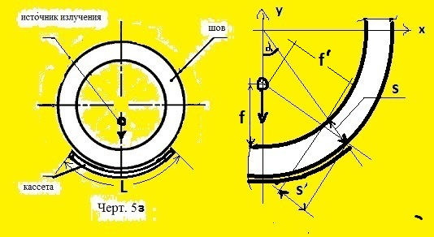

чувствительность K, мм : Выбрать от 0.1, но не более 5 мм
наружный радиус R, мм : Выбрать R больше r, но не более 4 м
внутренний радиус r, мм : Выбрать r меньше R
фокус.расстояние f, мм : Выбрать от 0, но не более r мм
угол альфа, град.: Выбрать от 0, но не более 85 град
фокусное пятно Ф, мм : Выбрать более 0, но не более Фmax
4.2а. При контроле кольцевых сварных соединений цилиндрических
и сферических пустотелых изделий следует, как правило, исполь-
зовать схемы просвечивания через одну стенку изделия (схемы
черт. 5а, б, е, ж, з). При этом рекомендуется использовать схе-
мы просвечивания с расположением источника излучения внутри
контролируемого изделия:
схему черт. 5з - при выборочном контроле изделий диаметром 2 м
и более...
4.4. При контроле стыковых сварных соединений по схеме черт.
5з направление излучения должно совпадать с плоскостью контро-
лируемого сварного соединения.
4.9. При выборе схемы и направления излучения следует учитывать:
угол между направлением излучения и нормалью к радиографической
пленке в пределах контролируемого за одну экспозицию участка
сварного соединения должен быть минимальным и в любом случае не
превышать 45°.
5.1. Расстояние от источника излучения до ближайшей к источнику
поверхности контролируемого участка сварного соединения и
размеры или количество контролируемых за одну экспозицию участ-
ков для схемы 5з просвечивания следует выбирать такими, чтобы
при просвечивании выполнялись следующие требования:
относительное увеличение размеров изображений дефектов, располо-
женных со стороны источника излучения (по отношению к дефектам,
расположенным со стороны пленки), не должно превышать 1,25;
угол между направлением излучения и нормалью к пленке в пределах
контролируемого за одну экспозицию участка сварного соединения
не должен превышать 45°;
5.3. При контроле сварных соединений по черт. 5з отношение внут-
реннего диаметра d к внешнему диаметру D контролируемого соеди-
нения не должно быть менее 0,8, а максимальный размер фокусного
пятна Ф источника излучения не должен быть более K*d/(D-d)/2,
где К - чувствительность контроля/
5.5. При отсутствии источника излучения, удовлетворяющего требо-
ванию п. 5.3, допускается при контроле по черт. 5з использовать
источники излучения с максимальным размером фокусного пятна,
удовлетворяющим соотношению Ф не более K*d/(D-d)/2. В этом случае
эталон чувствительности должен устанавливаться на сварном соеди-
нении или имитаторе сварного соединения, используемом при опреде-
лении чувствительности, только со стороны источника излучения.
ПРИЛОЖЕНИЕ 4.1. Расстояние f от источника излучения до обращенной
к источнику поверхности контролируемого сварного соединения не
должно быть менее значений, определяемых по формулe
f >= Cs,
где С=2Ф/К при Ф/К >= 2 и С=4 при при Ф/К менее 2;
s - радиационная толщина, мм;
D - наружный диаметр контролируемого сварного соединения, мм;
Ф - максимальный размер фокусного пятна источника излучения, мм;
K - требуемая чувствительность контроля, мм.
7. Расстояние от источника излучения до контролируемого сварного
соединения и длина контролируемых за одну экспозицию участков при
контроле кольцевых сварных соединений цилиндрических и сферичес-
ких пустотелых изделий с диаметром более 2 м определяются так же,
как для сварных соединений, контролируемых по схемам черт. 4 и 6.